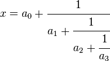
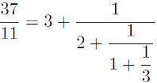

This work is copyright © Christopher Painter-Wakefield and is licensed under a Creative Commons Attribution-Share Alike 3.0 Unported License.
string cfrac(int num, int den) {
// fill in code here
}
A continued fraction is an iterative, recursive expression of a number as the sum of an integer and the reciprocal of a second number, which is itself expressed as a continued fraction. In other words, a continued fraction looks like:
where x is the number being represented, and the integers a0, a1, etc. are called the coefficients of the continued fraction. For example:
While there are many notations for continued fractions, one of the more compact notations simply lists the coefficients in square brackets; the first two coefficients (if more than one) are separated by a semicolon, while the remaining coefficients are separated by commas. For example, the continued fraction above for 37/11 would be written simply as [3;2,1,3]. Note that integers have no fractional part; thus the continued fraction representation of 42 is [42].
Continued fractions have some interesting and useful properties, such as the fact that a rational number will always have a finite continued fraction representation (contrast this with the decimal representation of rational numbers; for instance, 1/3 in decimal form has an infinite length). For an irrational real number, continued fractions have an infinite number of terms. You can read much more about continued fractions in the Wikipedia article.
For this lab, you are given the numerator and denominator of a rational number
and asked to return (as a string) the continued fraction representation of
the number. The algorithm for converting a rational number to a continued fraction is
based on Euclid's algorithm for greatest common denominator, and is really quite straightforward; you start by finding the integer quotient resulting from dividing
the numerator by the denominator. This is your first coefficient. The remainder is
necessarily a rational number less than 1 - so you simply need to take its reciprocal
and repeat the steps above to extract the next coefficient. As soon as the remainder
is zero, you're done!
Taking 37/11 as an example, we can write 37/11 as 3 + 4/11. So 3 is our first coefficient, as expected. The remainder is 4/11, whose reciprocal is 11/4. Now write the reciprocal as a continued fraction to obtain the remaining coefficients:
num will be a non-negative integer.den will be a positive integer.1 1 Returns: "[1]"
1 3 Returns: "[0;3]"
117 10 Returns: "[11;1,2,3]"
17 42 Returns: "[0;2,2,8]"